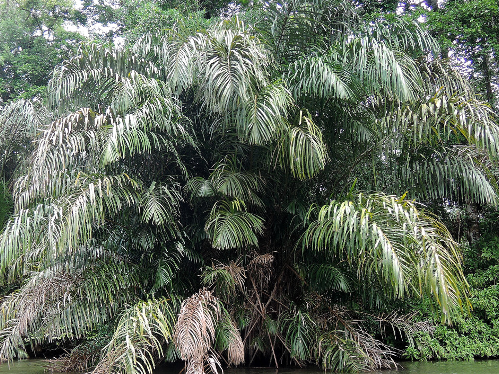

Flora adaptada al agua
La vegetación del humedal soporta inundaciones, sequías temporales y cambios estacionales que transforman por completo el ecosistema.
Sitio RAMSAR • Biodiversidad extraordinaria
Caño Negro es uno de los humedales más importantes del mundo, donde la vegetación, el agua y la vida silvestre forman un paisaje dinámico y de enorme valor ecológico para Costa Rica.
En Caño Negro, la flora y la fauna no se entienden por separado. Los cambios en el nivel del agua modifican el paisaje, influyen en la vegetación y determinan la presencia de aves migratorias, reptiles, mamíferos, peces y anfibios.
La vegetación del humedal soporta inundaciones, sequías temporales y cambios estacionales que transforman por completo el ecosistema.
Caño Negro es un punto clave para especies residentes y migratorias, especialmente aves, además de reptiles, peces, mamíferos y anfibios.
En época lluviosa predominan aguas extensas y vegetación flotante; en época seca emergen playones y pastos que cambian la oferta de alimento.
Más que la cantidad de especies, destaca su papel como refugio para plantas y animales que han disminuido en otras zonas de Centroamérica.
Caño Negro alberga más de 300 especies de plantas registradas, entre árboles, herbáceas, palmas y vegetación acuática. Su flora representa aproximadamente el 3% de la flora nativa de Costa Rica y es un ejemplo notable de adaptación a ambientes inundables.
especies registradas
tipos de árboles
especies herbáceas
especies de palmas

El Yolillo (Raphia taedigera) domina uno de los ecosistemas más característicos de Caño Negro. Estas palmas viven con sus raíces sumergidas y forman agrupaciones densas que sirven de refugio a numerosas especies animales.
Más que una especie aislada, el yolillal representa una estructura vegetal que da identidad al paisaje y define buena parte de la dinámica ecológica del humedal.

En estas zonas sobresalen especies como la María (Calophyllum brasiliense), el Camíbar (Copaifera aromatica) y el Palo de Agua o Poponjoche (Pachira aquatica).
Son bosques que permanecen bajo el agua gran parte del año. Sus especies están adaptadas a suelos saturados y cumplen un papel fundamental en la estructura vegetal del humedal.
En lagunas y caños aparecen “alfombras” flotantes de plantas que cumplen un papel vital en la oxigenación y el equilibrio del agua.
Acoelorraphe wrightii
Es una de las plantas más especiales de Caño Negro. En Costa Rica, su distribución natural está casi limitada a los humedales de la Zona Norte. Crece en colonias densas y aporta una imagen única al paisaje.
En época lluviosa predomina la vegetación flotante y emergente. En época seca, el nivel del agua baja drásticamente, aparecen playones y surgen pastos que alimentan a numerosas aves migratorias.
Caño Negro funciona como refugio para plantas de distribución restringida o poco comunes en otras regiones, lo que aumenta su importancia para la conservación.
Además de su riqueza de especies, el humedal destaca por sus asociaciones vegetales, su conectividad ecológica y la presencia de plantas con distribución restringida en Costa Rica.
La flora de Caño Negro se organiza en distintas asociaciones según el nivel de inundación. Este patrón determina qué especies logran desarrollarse y da forma al paisaje del humedal.
Algunas plantas presentes en Caño Negro tienen una distribución natural muy limitada en Costa Rica, lo que refuerza su valor ecológico y científico.
Debido a la conexión del Río Frío con el Lago de Nicaragua, gran parte de la flora de Caño Negro se comparte entre ambos países, formando un corredor biológico binacional.
Esta conectividad favorece el intercambio natural de especies y fortalece la biodiversidad regional.
Más que por la cantidad de especies estrictamente endémicas, Caño Negro destaca por actuar como un “arca de Noé” para plantas que han desaparecido en otras zonas de Centroamérica debido a la agricultura y la ganadería.
También conserva poblaciones valiosas de especies raras o históricamente presionadas, como la caoba (Swietenia macrophylla).
La fauna de Caño Negro responde directamente a la dinámica del humedal. En algunos momentos predominan los espejos de agua y las aves acuáticas; en otros, los playones y zonas abiertas favorecen nuevos movimientos de especies.
315 – 400
Incluye aves migratorias y residentes; es el grupo más abundante y uno de los mayores atractivos del refugio.
160
Destacan 90 especies de murciélagos y 70 especies terrestres, incluyendo felinos, primates y otras especies asociadas a bosques y humedales.
49 – 55
Claves para el equilibrio acuático del humedal. Sobresale el gaspar, una especie simbólica y de gran valor biológico.
35+
Destacan caimanes, cocodrilos, tortugas y otros reptiles ligados a lagunas, orillas, canales y zonas inundables.
30+
Indicadores ecológicos del estado ambiental del ecosistema.
Caño Negro es un santuario para la observación de aves. Este grupo constituye el mayor atractivo del refugio debido a la presencia de especies residentes y migratorias que utilizan el humedal como sitio de alimentación, descanso y reproducción.
Residentes: Aproximadamente 206 especies habitan el refugio durante todo el
año.
Migratorias: Alrededor de 101 especies visitan el humedal durante el invierno
del hemisferio norte.
Especies clave: destacan la Garza Agamí (Agamia agami), el Jabirú (en peligro de extinción), la Espátula Rosada, el Cigüeñón y el Pájaro Serpiente o pato aguja (Anhinga).
La riqueza avifaunística convierte a Caño Negro en uno de los espacios más importantes para el avistamiento en Costa Rica.
Ver más informaciónCaño Negro alberga una gran variedad de mamíferos. Entre ellos sobresalen especies de murciélagos, felinos, monos y otros animales que encuentran refugio en los bosques, zonas inundables y áreas ribereñas del humedal.
Esta diversidad refleja la complejidad ecológica del refugio, ya que la presencia de mamíferos depende de la cobertura vegetal, la disponibilidad de agua y la conexión entre distintos ambientes naturales.
Entre los mamíferos más representativos se han registrado el Jaguar, la Danta o Tapir, el Puma y el Manatí, este último muy raro y en peligro. También es común observar primates como el Mono Congo, el Mono Carablanca y el Mono Colorado o Mono Araña.
Ver más informaciónEl sistema hídrico del Río Frío alberga especies de gran valor científico y comercial, siendo el Gaspar (Atractosteus tropicus) uno de los más representativos. Este pez es considerado un “fósil viviente” por su apariencia prehistórica, y Caño Negro es uno de los pocos lugares donde se protege.
Además del gaspar, habitan otras especies importantes como el Sábalo real, Guapote, Róbalo y diversas Mojarras, todas fundamentales para el equilibrio del ecosistema acuático.
Su presencia mantiene la cadena alimenticia y está estrechamente relacionada con la dinámica del agua, la vegetación acuática y la reproducción de otras especies asociadas a lagunas, caños y zonas inundables.
Ver más informaciónLos reptiles de Caño Negro están estrechamente ligados a canales, lagunas, riberas y sectores de vegetación densa. Caimanes, tortugas, basiliscos e iguanas forman parte de la identidad visual y ecológica del humedal.
Su abundancia muestra la capacidad del refugio para sostener especies adaptadas a ecosistemas acuáticos y semiacuáticos, donde el calor, el agua y la cobertura vegetal crean condiciones ideales para su supervivencia.
Caño Negro es famoso por presentar una de las mayores concentraciones de Caimán de Anteojos y Cocodrilos en la zona norte, además de especies como la Tortuga Jicotea, muy asociadas a los cuerpos de agua del humedal.
Ver más informaciónLos anfibios dependen de ambientes húmedos y saludables, por lo que su presencia es una señal importante del estado ecológico de Caño Negro. Ranas y sapos participan activamente en el equilibrio del ecosistema y en el control natural de insectos.
Aunque son menos visibles que otros grupos, su valor ecológico es enorme, ya que reaccionan con rapidez a los cambios ambientales y ayudan a comprender la salud del humedal.
Ver más informaciónLa biodiversidad de Caño Negro también se entiende a partir de los cambios estacionales, que modifican la distribución de la fauna y favorecen la observación de especies poco comunes en otras regiones del país.
Cuando se habla de “variedades” en términos biológicos, se hace referencia a la diversidad genética dentro de las especies. En Caño Negro, esta riqueza se ve impulsada por la dinámica natural del humedal.
Durante la estación seca, entre enero y abril, el agua se reduce a pequeñas lagunas, concentrando la fauna y facilitando el avistamiento de especies específicas de aves acuáticas.
Esta dinámica permite observar especies y comportamientos que no siempre se presentan en otras partes de Costa Rica, lo que aumenta el valor ecológico y turístico del refugio.
Caño Negro es considerado uno de los humedales más importantes del mundo por la extraordinaria densidad de vida silvestre que puede sostener por hectárea.
CAÑO NEGRO
Comprender Caño Negro es entender cómo cada planta, cada espejo de agua y cada especie forman parte de un sistema vivo. Su conservación protege uno de los paisajes ecológicos más valiosos de Costa Rica.